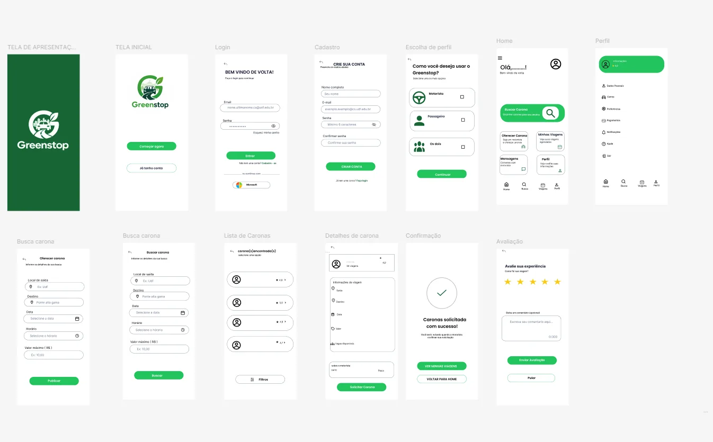
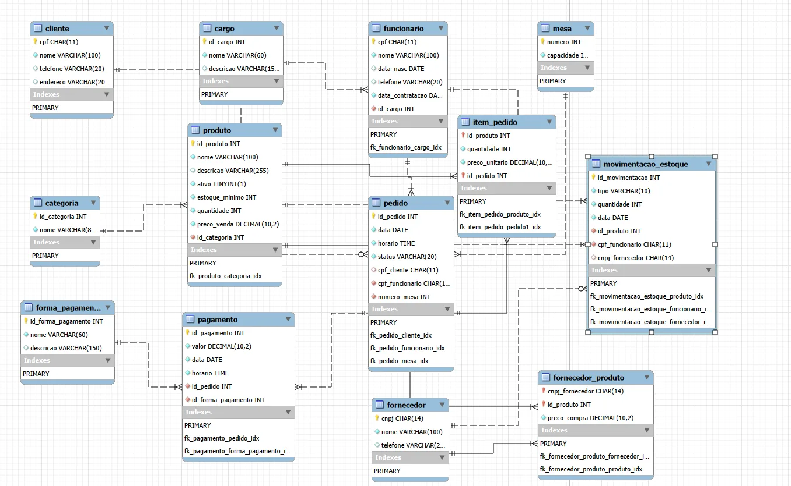
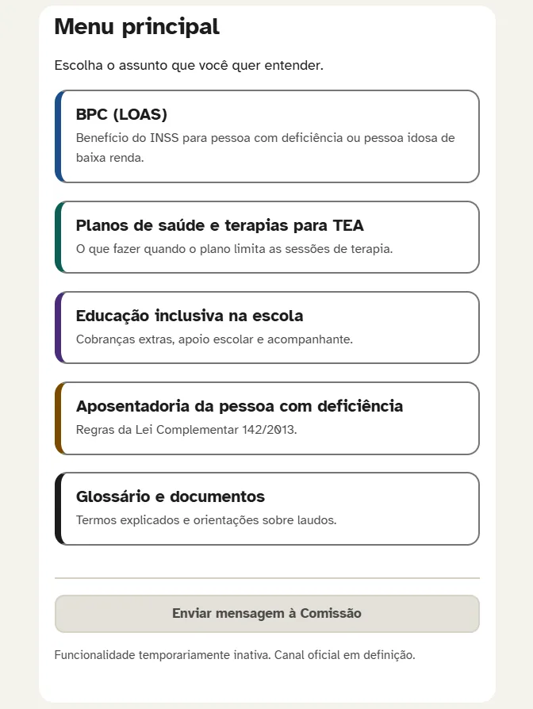
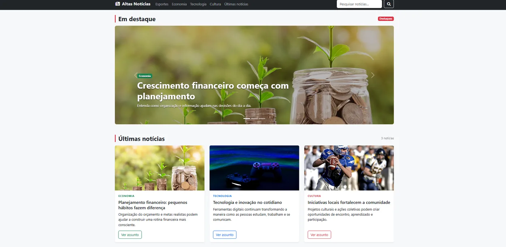
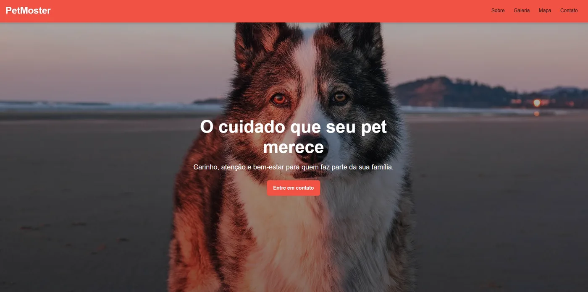

Adryan Silva · Estudante de Análise e Desenvolvimento de Sistemas
Criandoexperiências digitais,um projeto de cada vez.
Sou estudante de Análise e Desenvolvimento de Sistemas, com conhecimentos em HTML, CSS, JavaScript e MySQL. Desenvolvo projetos acadêmicos e pessoais enquanto aprimoro minhas habilidades para atuar profissionalmente em tecnologia.
Buscando oportunidades de estágio e aberto a projetos de desenvolvimento web.
Sobre mim
Sou estudante de Análise e Desenvolvimento de Sistemas e estou no início da minha formação. Comecei pela lógica de programação, pelo HTML e pelo CSS, e fui ampliando o que sei a cada projeto: JavaScript para dar vida às páginas, MySQL para organizar dados e Git e GitHub para versionar o que construo.
Gosto de criar soluções úteis e de entender como as pessoas usam o que construímos, por isso também me interesso por UX/UI, com Figma e Miro. Meus projetos são acadêmicos e mostram essa evolução: do primeiro site de pet shop a um banco de dados com 13 tabelas.
Hoje busco minha primeira oportunidade de estágio em TI e também quero desenvolver sites para pessoas e pequenos negócios. Meu conhecimento ainda é básico e meu inglês também, mas estudo e pratico todos os dias.
Conhecimentos
Conhecimentos em nível inicial, praticados nos projetos da faculdade e em estudo contínuo.
Dados, lógica e versionamento
UX/UI e análise
Idiomas: português nativo · inglês básico.
Trajetória acadêmica
2026.1
Fundamentos, prototipação, UX/UI, requisitos e modelagem.
Prototipagem de Sistemas Computacionais: modelagem UML (casos de uso, atividades, sequência e classes), histórias de usuário, BPMN e requisitos de negócio, funcionais e não funcionais.
Interface e Jornada do Usuário: prototipação, personas, benchmarking, briefing e atividades de experiência do usuário.
2026.2
Desenvolvimento Front-end, banco de dados, SQL e projetos acadêmicos.
Projetos
Cinco projetos acadêmicos, de interfaces a banco de dados. Cada um mostra o objetivo, minha participação e o que aprendi.

GreenStop
Aplicativo acadêmico de caronas universitárias, desenvolvido em grupo para facilitar o compartilhamento de caronas entre estudantes da UDF.

Gestão de Restaurante
Banco de dados relacional em MySQL para um restaurante, com modelo de 13 tabelas, dados de teste e 18 consultas SQL.

Direito Claro
Protótipo em HTML que busca facilitar o acesso a informações sobre direitos, em linguagem simples.
Protótipo acadêmico e informativo, sem validação jurídica.

Altas Notícias
Site de notícias com menu de categorias, busca, carrossel de destaque e cards de notícias.

Como posso ajudar
Estou no início da formação, mas já posso ajudar com projetos web simples e bem organizados.
Sites institucionais simples
Páginas claras com o essencial sobre você ou seu negócio: quem é, o que oferece e como entrar em contato.
Landing pages
Uma página focada em um único objetivo, como divulgar um serviço, um evento ou um produto, com chamada para contato.
Páginas de apresentação
Para profissionais e pequenos negócios que querem se apresentar na internet de forma simples e organizada.
Melhorias de layout e responsividade
Ajustes básicos para que uma página existente fique organizada e legível no celular e no computador.
Uso HTML, CSS e JavaScript e converso com você antes sobre o que é possível entregar. Meu foco principal é conquistar o primeiro estágio em TI, e aceito projetos iniciais que caibam nos meus estudos.
Vamos conversar?
Busco minha primeira oportunidade de estágio em TI e também quero desenvolver sites para pessoas e pequenos negócios. Se quiser conhecer meus projetos ou conversar sobre uma oportunidade ou ideia, escreva para mim.
adryanferreiradev@gmail.com